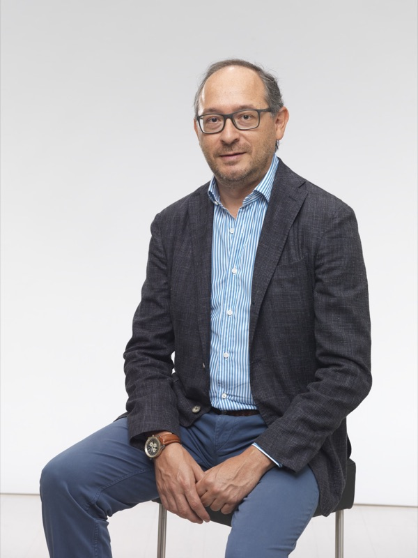
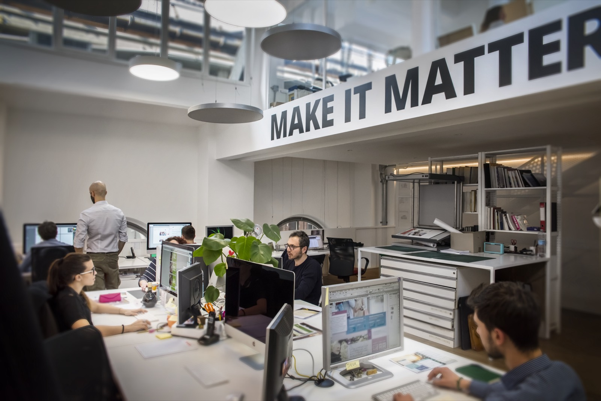

Un processo alla volta, misurato prima e dopo
NIUEXA S.R.L. è una società di consulenza AI con sede legale a Torino e un ufficio a Milano. Lavoriamo con le PMI italiane su un processo alla volta: lo misuriamo com'è, lo automatizziamo sui sistemi che l'azienda usa già, lo rimisuriamo e decidiamo insieme se estendere, correggere o fermarci.
I fondatori
Gregor Maric
CEO e Co-Fondatore di Niuexa
Gregor Maric si occupa di automazione dei processi aziendali dal 2012: flussi documentali, RPA e, oggi, agenti AI. Ha fondato Niuexa per portare nelle PMI lo stesso approccio: partire dal processo, misurarlo, e usare l'AI solo dove serve.
In Niuexa guida i progetti di automazione e la formazione. Il principio che porta in ogni progetto è semplice: l'agente propone, la persona decide.

Roberto Botto
Co-Fondatore di Niuexa e CEO di Libera Brand Building Group
Roberto Botto è fondatore e CEO di Libera Brand Building Group, con oltre 25 anni di esperienza in comunicazione digitale e marketing.
In Niuexa porta la parte di mercato: come si presenta un prodotto, a chi si rivolge e come si misura se la comunicazione funziona.
Come lavoriamo
Il processo prima dello strumento
Mappiamo attività, volumi, tempi ed eccezioni e fissiamo una misura di partenza. Scegliamo la tecnologia solo dopo, e rimisuriamo con gli stessi criteri.
L'agente propone, la persona decide
Le eccezioni e le decisioni sensibili passano a una persona, mai direttamente nel gestionale. Il controllo umano è parte del progetto, non un'aggiunta.
Sui sistemi che usa già
Non serve sostituire CRM, ERP o gestionali: quando è sostenibile, colleghiamo la soluzione ai flussi e agli strumenti che il team usa ogni giorno.
Quando l'AI non serve, lo diciamo. A volte basta una regola nel gestionale, un modulo fatto meglio o un po' d'ordine nei dati.
La storia
Le origini
Niuexa nasce come progetto tra Milano e Torino, dall'esperienza dei fondatori nell'automazione dei processi, per portare l'AI nel lavoro quotidiano delle aziende.
Primi progetti
Primi progetti con aziende italiane: formazione dei team, automazione dei processi e AI agent, misurati su obiettivi concordati con ogni cliente.
Prodotti e collaborazioni
Nuovi prodotti AI e nuove collaborazioni per portare l'AI generativa nel lavoro quotidiano delle aziende.
NIUEXA S.R.L.
Nasce NIUEXA S.R.L., controllata da Libera Brand Building Group, con sede legale a Torino e un ufficio a Milano. In autunno partono a Milano gli incontri NIUEXA sull'AI in azienda.
Le sedi
Torino
Sede legale
Via Vittorio Andreis 18, 10152 Torino

Milano
Ufficio e sede degli incontri NIUEXA
Via Rutilia 10, 20141 Milano
Libera Brand Building Group
La società che controlla Niuexa
Il rapporto con Niuexa
Niuexa è controllata da Libera Brand Building Group, attiva da oltre 20 anni nella comunicazione digitale e guidata da Roberto Botto. Da Libera arrivano le competenze di mercato che affiancano il lavoro tecnico di Niuexa, e nell'ufficio Libera di Via Rutilia a Milano si tengono gli incontri NIUEXA.
Di cosa si occupa Libera
Posizionamento
Come si presenta un prodotto e a quali clienti si rivolge.
Lancio
Il piano di comunicazione per portare un prodotto sul mercato.
Vendita
Canali e strategie di vendita coerenti con il posizionamento.
Misura
Indicatori per capire quali azioni funzionano e quali no.
I nostri principi
Misura
Ogni progetto parte da una misura del processo com'è e si giudica con gli stessi criteri alla fine. Non promettiamo percentuali in anticipo.
Trasparenza
Diciamo con chiarezza cosa una soluzione fa e cosa non fa, e mettiamo il costo per iscritto in un preventivo dopo l'analisi.
Responsabilità
Le decisioni restano alle persone dell'azienda. Progettiamo i controlli umani insieme a chi userà la soluzione ogni giorno.
Conoscenza condivisa
Guide e schede di lavoro gratuite, come l'AI Metric Contract e l'AI Outcome Budget, che si usano anche senza di noi.
Domande frequenti
Chi sono i fondatori di Niuexa?
Niuexa è stata fondata da Gregor Maric, CEO, che si occupa di automazione dei processi aziendali dal 2012, e da Roberto Botto, fondatore e CEO di Libera Brand Building Group.
Che cos'è NIUEXA S.R.L.?
NIUEXA S.R.L. (P.IVA 13489560014) è una società di consulenza AI costituita nel 2026, con sede legale a Torino in Via Vittorio Andreis 18 e un ufficio a Milano in Via Rutilia 10. È controllata da Libera Brand Building Group e fa parte di AUSED.
Come lavora Niuexa?
Su un processo alla volta: prima lo misura com'è, poi lo automatizza sui sistemi che l'azienda usa già, lo rimisura e decide con il cliente se estendere, correggere o fermarsi. Le eccezioni passano a una persona: l'agente propone, la persona decide.
Ci mostri un processo
In 30 minuti, gratuiti e senza impegno, guardiamo insieme un processo della Sua azienda e Le diciamo se l'AI può alleggerirlo.